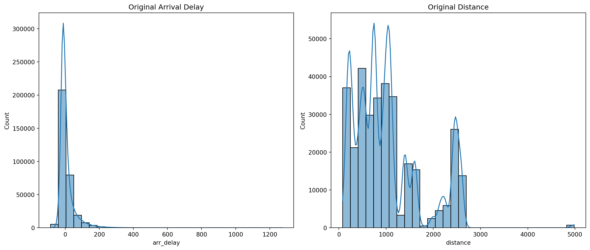

import pandas as pd
import seaborn as sns
import matplotlib.pyplot as plt
from sklearn.preprocessing import StandardScaler, MaxAbsScaler, MinMaxScaler
import numpy as np
from nycflights13 import flightsAE 04: NYC flights + data preprocessing
Suggested answers
Application exercise
Answers
Important
These are suggested answers. This document should be used as reference only, it’s not designed to be an exhaustive key.
Exercise 1 - Load data
Fill in the blanks:
# Load the flights data
df = flights
df.info()<class 'pandas.core.frame.DataFrame'>
RangeIndex: 336776 entries, 0 to 336775
Data columns (total 19 columns):
# Column Non-Null Count Dtype
--- ------ -------------- -----
0 year 336776 non-null int64
1 month 336776 non-null int64
2 day 336776 non-null int64
3 dep_time 328521 non-null float64
4 sched_dep_time 336776 non-null int64
5 dep_delay 328521 non-null float64
6 arr_time 328063 non-null float64
7 sched_arr_time 336776 non-null int64
8 arr_delay 327346 non-null float64
9 carrier 336776 non-null object
10 flight 336776 non-null int64
11 tailnum 334264 non-null object
12 origin 336776 non-null object
13 dest 336776 non-null object
14 air_time 327346 non-null float64
15 distance 336776 non-null int64
16 hour 336776 non-null int64
17 minute 336776 non-null int64
18 time_hour 336776 non-null object
dtypes: float64(5), int64(9), object(5)
memory usage: 48.8+ MBThe flights data frame has 336776 rows. Each row represents a observation.
Exercise 2 - Data cleaning
Remove rows with missing values in the arr_delay and distance columns.
What are the names of the variables in flights.
df_clean = df.dropna(subset=['arr_delay', 'distance'])Exercise 3 - Original Data Distribution
- Plot the original distributions of
arr_delayanddistance.
fig, axes = plt.subplots(1, 2, figsize=(14, 6))
sns.histplot(df_clean['arr_delay'], bins=30, kde=True, ax=axes[0]).set(title='Original Arrival Delay')
sns.histplot(df_clean['distance'], bins=30, kde=True, ax=axes[1]).set(title='Original Distance')
plt.tight_layout()
plt.show()
Exercise 4 - Check for Skewness
- Calculate and print the skewness of
arr_delayanddistance.
skew_arr_delay = df_clean['arr_delay'].skew()
skew_distance = df_clean['distance'].skew()
print(f"Skewness of Arrival Delay: {skew_arr_delay}")
print(f"Skewness of Distance: {skew_distance}")Skewness of Arrival Delay: 3.716817480457187
Skewness of Distance: 1.1133926208294944Exercise 5 - Scaling
- Check the summary statistics of
arr_delayanddistanceto see if scaling is necessary.
df_clean['arr_delay'].describe()count 327346.000000
mean 6.895377
std 44.633292
min -86.000000
25% -17.000000
50% -5.000000
75% 14.000000
max 1272.000000
Name: arr_delay, dtype: float64df_clean['distance'].describe()count 327346.000000
mean 1048.371314
std 735.908523
min 80.000000
25% 509.000000
50% 888.000000
75% 1389.000000
max 4983.000000
Name: distance, dtype: float64- Question: Do
arr_delayanddistanceneed to be scaled?
Yes, the units are completely different.
- Apply standard scaling, maximum absolute scaling, and Min-Max Scaling to the transformed
arr_delayanddistance.
# Standard Scaling
scaler = StandardScaler()
df_clean.loc[:, ['arr_delay_standard', 'distance_standard']] = scaler.fit_transform(df_clean[['arr_delay', 'distance']])
# Maximum Absolute Scaling
max_abs_scaler = MaxAbsScaler()
df_clean.loc[:, ['arr_delay_maxabs', 'distance_maxabs']] = max_abs_scaler.fit_transform(df_clean[['arr_delay', 'distance']])
# Min-Max Scaling
min_max_scaler = MinMaxScaler()
df_clean.loc[:, ['arr_delay_minmax', 'distance_minmax']] = min_max_scaler.fit_transform(df_clean[['arr_delay', 'distance']])- Question: What are the two pros and two cons of standardizing data?
Pros
Improved Model Performance:
Consistency: Ensures that features contribute equally to the model, enhancing performance for algorithms like linear regression and neural networks.
Speed: Helps optimization algorithms, like gradient descent, converge faster.
Enhanced Interpretability:
Standardization: Makes model coefficients easier to understand, especially in linear models.
Comparison: Simplifies comparison between features during data analysis.
Cons
Potential Loss of Interpretability:
- Raw Values: Scaled values might lose their original meaning and units.
Assumption of Distribution:
Normality: Some methods assume data is normally distributed, which may not always be true.
Sensitive to Outliers: Outliers can distort scaled values in methods like standard scaling.
Exercise 6 - Transformation
- Check the summary statistics again with your min-max standardized columns.
df_clean['arr_delay_minmax'].describe()count 327346.000000
mean 0.068406
std 0.032867
min 0.000000
25% 0.050810
50% 0.059647
75% 0.073638
max 1.000000
Name: arr_delay_minmax, dtype: float64df_clean['distance_minmax'].describe()count 327346.000000
mean 0.197506
std 0.150094
min 0.000000
25% 0.087497
50% 0.164797
75% 0.266979
max 1.000000
Name: distance_minmax, dtype: float64- Question: Why should you use the min-max scaled data instead of a different scaling for the transformations (hint: especially log transformation)
The other transformations had with negative values for arr_delay.
Apply a log transformation to
arr_delayif it is positively skewed and apply a square root transformation todistanceif it is negatively skewed (useifelsestatements).Hint: Logical operators in Python:
operator definition <is less than? <=is less than or equal to? >is greater than? >=is greater than or equal to? ==is exactly equal to? !=is not equal to? x and yis x AND y? x or yis x OR y? pd.isna(x)is x NA? ~pd.isna(x)is x not NA? x in yis x in y? x not in yis x not in y? not xis not x? (only makes sense if xisTrueorFalse)
if skew_arr_delay > 0:
df_clean.loc[:, 'arr_delay_transformed'] = np.log1p(df_clean['arr_delay_minmax'])
else:
df_clean.loc[:, 'arr_delay_transformed'] = df_clean['arr_delay_minmax']
if skew_distance > 0:
df_clean.loc[:, 'distance_transformed'] = np.sqrt(df_clean['distance_minmax'])
else:
df_clean.loc[:, 'distance_transformed'] = df_clean['distance_minmax']- Question: Why do we have to add a constant when we perform a log or square-root transformation (i.e.,
np.log1p(df['column' + 1]))?
The logarithmic and square-root functions do not contain negative numbers or 0.